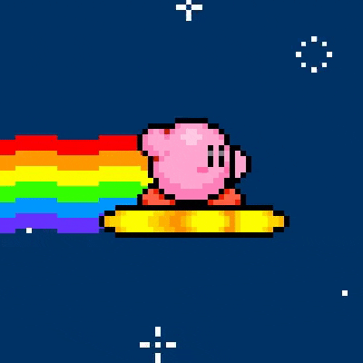

1. GIF animado
Crea un GIF animado a partir de varias imágenes fijas y sustitúyelo en el siguiente bloque:

File size: 137KiB, width: 400px, height: 400px, frames: 7, type: gif, length: 00:00:00.7
Lo primero que he hecho para crear el GIF ha sido buscar una hoja de sprites y
recorte cada frame con GIMP, luego los subi todos a la herramienta web
GIF Maker. Una vez en la pagina, subi todos
los frames de mi GIF en orden, estableci un delay para cada uno de los frames de
10 y un delay time para toda la animacion de 10 (5.00 FPS); y ya esta listo, ahora
solo tuve que darle a el boton "Make a GIF!" y descargarlo.
2. Animación hover con CSS
Diseña un botón con una animación suave al pasar el ratón (cambios de color, tamaño, posición, etc.).
3. Animación continua con @keyframes
Crea una animación continua (por ejemplo un icono que late o una burbuja
que se desplaza) usando la propiedad animation.
La burbujita debe moverse o cambiar de tamaño de forma infinita mediante una animación CSS.
4. Comparativa GIF vs CSS
Lo ideal es usar GIF cuando lo que queremos representar es muy complejo o es algun clip de un video o similar, miestras que las animaciones de CSS lo ideal es usarlas para elementos de la interfaz mas sencillos. En general las animaciones CSS tienen un mayor rendimiento y al tratace de imagenes vectoriales no pierden resolucion, tambien permiten un control total sobre la animacion en tiempo real. Por todo esto, podemos decir que las animaciones de CSS son mucho mas accecibles que los GIFs ya que nos ofrecen control total sobre la misma y no es nesesario cargar arcgivos para su funcionamiento y asi siendo mas eficietes.